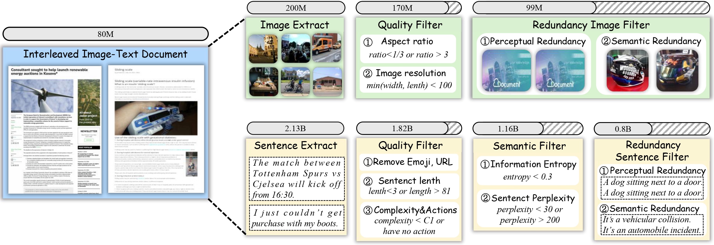

Steps
- Data Extraction: A random sample of 118 million image-text documents is selected from OBELICS
 . Images are stored in a dedicated image database, and sentences are segmented using NLTK and stored in a separate sentence database.
. Images are stored in a dedicated image database, and sentences are segmented using NLTK and stored in a separate sentence database. - Visual Image Filtration: Low-quality images are removed based on size and aspect ratio. Redundant images are filtered using EVA02-CLIP and the Union-Find algorithm.
- Textual Knowledge Filtration: Sentences are filtered by eliminating those with emojis, URLs, or outside the word count range (3-81). Sentences with at least C1 caption complexity and containing an action are retained, according to CAT rules.